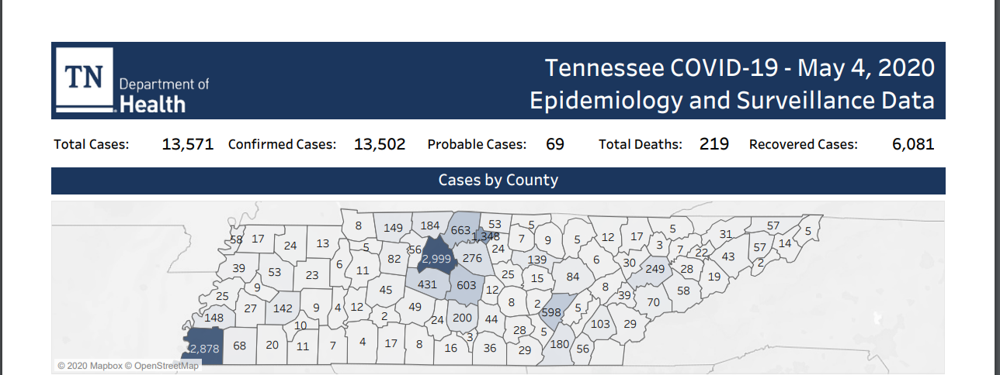
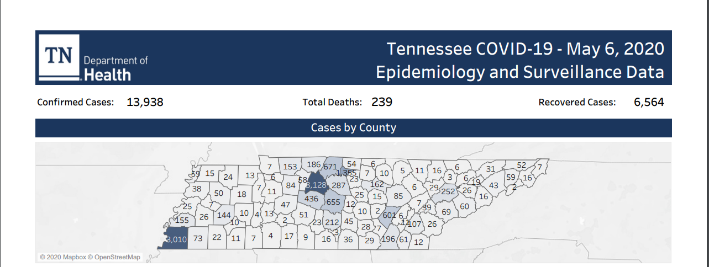
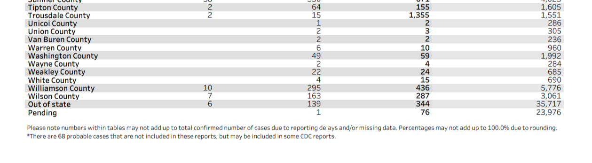

[TN] PCL Historicals
Issue number 706
the-daniel-lin opened this issue on July 30, 2020 at 10:07 am
Labels Historical Data not stale Backfill
State or US: Tennessee
Describe the problem Our current historical data has ‘PCR Cases (People)’ dating back to 4/29 when we began to track the metric. On 5/4, TN began to separate probable and confirmed cases. From 5/4 - 5/5 (inclusive), we report the proper confirmed and lumped values. Beginning 5/6, TN moved the probable value from the top to a small print footnote at the bottom of the PDF (scroll to the bottom). As a result, we missed the probable values and reported the same values for both lumped and confirmed columns from 5/6 - 6/9 (inclusive). On 6/10, we noticed the fine print and began reporting the correct values, and we have reported the proper values in each column ever since. Beginning 6/12, TN put the probable case value back at the top of the PDF, allowing for easier data collection.
TN began to publish daily PDFs beginning 4/11. Our screenshots of the PDFs only extend to 5/22 before they go blank, so you need to use the Wayback machine or some other method to find values prior to 5/22. I don’t know if there’s some way to automate taking screenshots from the Wayback machine (?)
We need to:
- Clear values in ‘PCR Cases (People)’ for 5/3 and prior.
- Add probable values to the lumped ‘positive’ column from 5/6 - 6/9 (inclusive)
- Thread from 6/10 for precedent: https://covid-tracking.slack.com/archives/CUQ4MMTPD/p1591819795359300
Link to data source
This data comes from TN’s daily Epidemiology and Surveillance Data PDF located on the state site: https://www.tn.gov/content/tn/health/cedep/ncov/data.html
5/4 PDF Screenshot: 
5/6 PDF Screenshot (only confirmed; scrolled to bottom probable footnote): 

This was completed in this issue